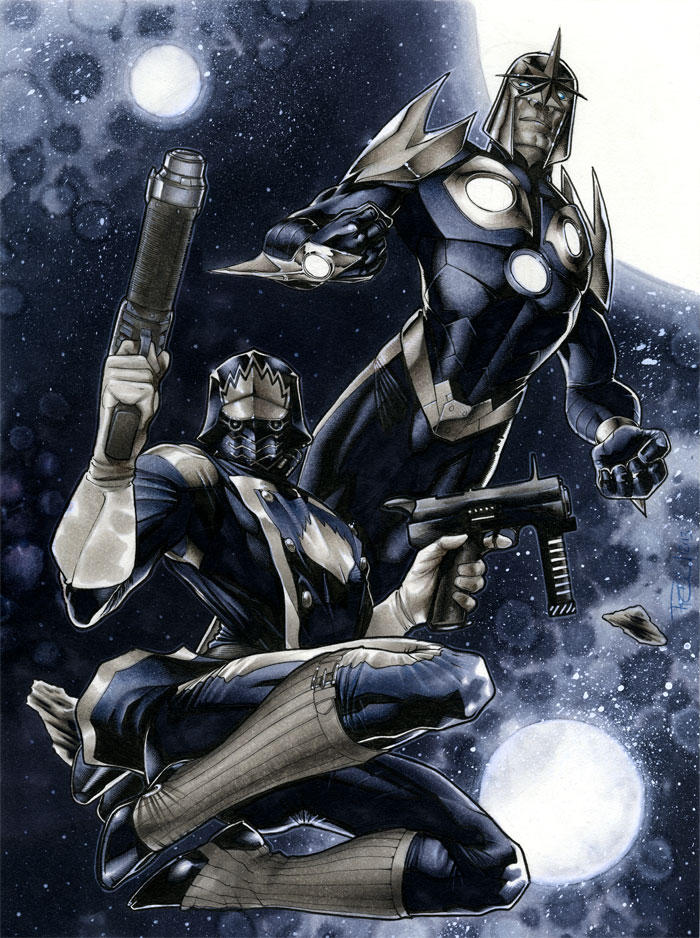
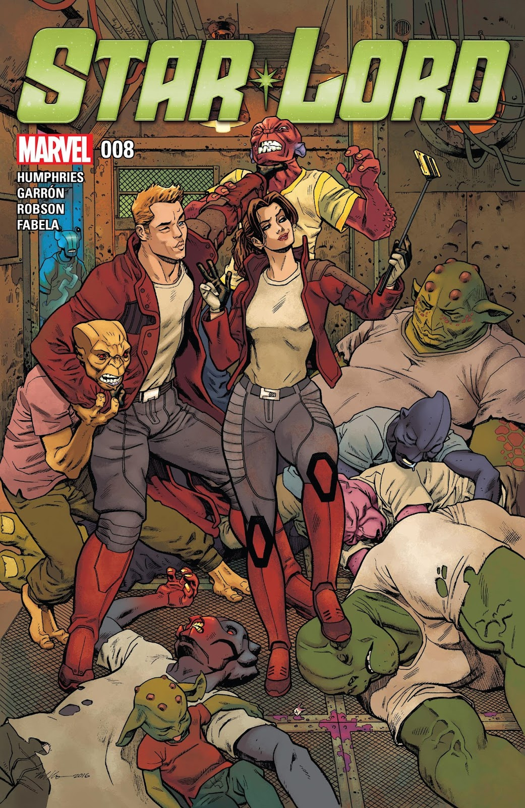

Peter Quill is an interstellar war hero, the legendary Star-Lord. A human-alien hybrid, Quill was born from emperor J'Son of Spartax and the human Meredith Quill.
Partnerning with the sentient vehicle Ship, Star-Lord became a legend throughout the galaxy, and his heroic actions in the wars against Annihilus and the Phalanx, led him to form the Guardians of the Galaxy, with Rocket Raccoon, Groot, Gamora and Drax the Destroyer, among many others. During their adventures, Peter met his long-lost sister Victoria and dated Kitty Pryde, with the two becoming engaged, but ultimately breaking up.
Recently, a battle with the Olympians unlocked Peter's latent powers, turning him into the Master of the Sun. He was also stranded in an extra-dimensional world called Morinus, where he became romantically entangled with two local nomads named Mors and Aradia, and where he fathered a son he called Rocket. However, Quill was forced to leave Morinus to defeat the Olympians once and for all. After that, the Galactic Council officially recognized the Guardians as the Super Heroes of Space, and they guarded the galaxy from threats like Dormammu and Grootfall.
After Nebula joined the Guardians, she combined the probability engine in her head with the Guardians' threat data to create an early-warning system that pointed to Groot's homeworld as the most likely threat vector to galactic peace. When Groot and Rocket landed on it, they found the planet razed to the ground. Granopy infected Groot with one of her branches, turning Groot into an out-of-control monster. As Groot became planet-sized, getting designated "Grootfall", he took out most of the Guardians and the Proscenium, and proceeded to launch pieces of himself at neighboring planets, annexing everything into his "Grootspace."
| Team Affiliations | |
|---|---|
| Guardians of the Galaxy | |
| Nova Corps | |
| Imperial Kree Army | |
| Infinity Watch | |
| Ravagers | |
| Imperial Guard | |
| United Front | |
| NASA |
Katherine Pryde
Rocket Raccoon
Richard Rider (Nova)
Groot
Gamora
Adam Warlock
